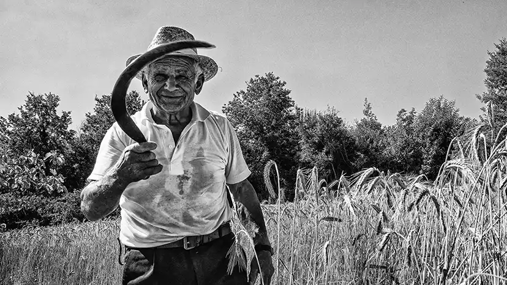
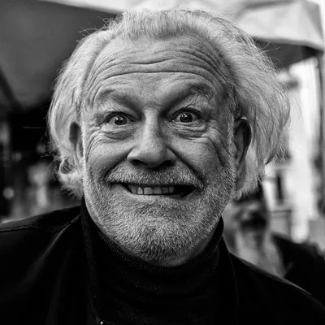
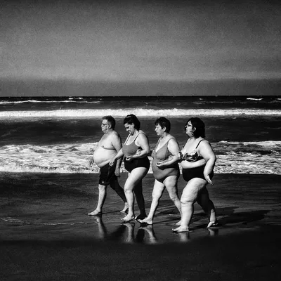
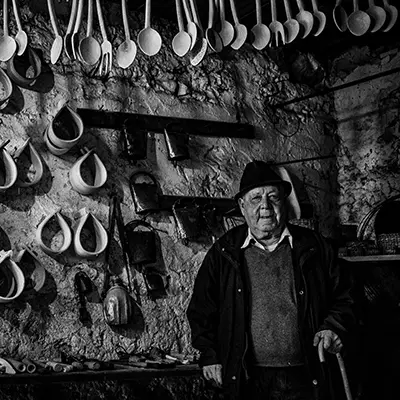
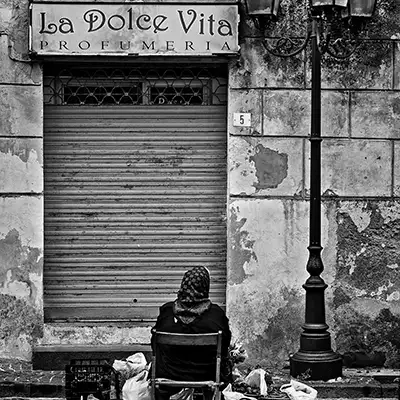
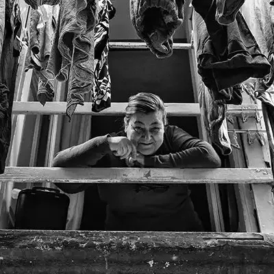
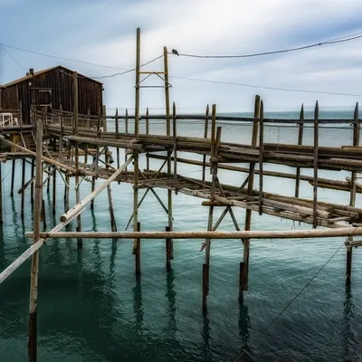

Antonio Manno
photography
BIOGRAFIA

L'Uomo Dietro L'Obiettivo
La passione per la fotografia ha accompagnato la mia vita da sempre, nata dalla curiosità che ha sempre contraddistinto il mio sguardo sul mondo.
Dal Mare al Jazz
Dal 1985 al 1992 ho vissuto e lavorato a La Spezia, dove ho immortalato i borghi delle
Cinque
Terre e le persone che li abitavano. Negli anni seguenti ho realizzato diversi progetti
sulla
vita di mare, fino al 1999: l'anno in cui la fotografia jazz è entrata prepotentemente nella
mia
vita.
Quindici Anni di Jazz
L'incontro con il jazz è stato un crescendo continuo di emozioni visive, una sinestesia
perfetta
tra musica e immagine. Dal 2000 al 2015 sono stato fotografo ufficiale del Teano Jazz
Festival,
dove ho ritratto il mio primo musicista: Bill Frisell.
In quegli anni ho catturato l'essenza di grandi artisti come Dave Holland, Paolo Fresu, Enrico Rava, Ron Carter, Chris Potter, Carla Bley, Stefano Bollani, Fabrizio Bosso, fino ai Buena Vista Social Club e Marcus Miller.
Il Dovere della Memoria
Nel 2007 e 2008 ho realizzato un reportage fotografico ad Auschwitz. Da febbraio 2008 porto
questo lavoro nelle scuole di ogni ordine e grado, trasformando il dolore di quei luoghi in
testimonianza visiva per le nuove generazioni.
La Mia Fotografia Oggi
Il bianco e nero rimane la mia più grande passione. Cerco la mia fotografia tra la gente dei
piccoli borghi, tra i viaggiatori dei treni, nelle processioni che sanno di sacro e di
antico,
nei
mercati dove il diverso si annulla nelle voci e nei sorrisi.
Ho costruito il mio stile attraverso la lezione dei Grandi Maestri, arrivando a una visione personale del mondo basata sul contrasto tra luci e ombre nella street photography dei "grandi fotografi" del passato.
"Se sapessi come si fa una buona fotografia, la farei sempre." (Robert Doisneau)
Collaborazioni di Rilievo
- 2003 - 2004 Fotografa per la rivista "Jazzit" in occasione della rassegna "Umbria Jazz Winter", tra i festival jazz più prestigiosi d'Italia.
- 2004 - 2005 Fotografo ufficiale del Campobasso Jazz Festival.
- 2006 Repubblica.it ha dedicato spazio a tre sue gallery, "viaggi in treno" "ritratti della gente del suo paese" e una selezione di foto di "jazz".
- 2008 Il riconoscimento internazionale è stato quando il Tokyo Jazz Festival ha pubblicato tre fotografie di Ron Carter nella brochure ufficiale del festival.
Portfolio
portraits
92 photos

street
131 photos

jazz
98 photos
processions
229 photos
arti e mestieri
18 photos

fulvio vellone
27 photos

country market
76 photos

giochi di paese
45 photos
windows
21 photos

urban
37 photos
train
17 photos

auschwitz
60 photos
colours
24 photos
landscapes
29 photos

Mostre


Contatti
Grazie! Il tuo messaggio è stato inviato con successo. Ti risponderemo entro 48 ore.
Si è verificato un problema e il messaggio non è stato inviato. Riprova tra qualche istante o contattaci via email.
Info:
Tel